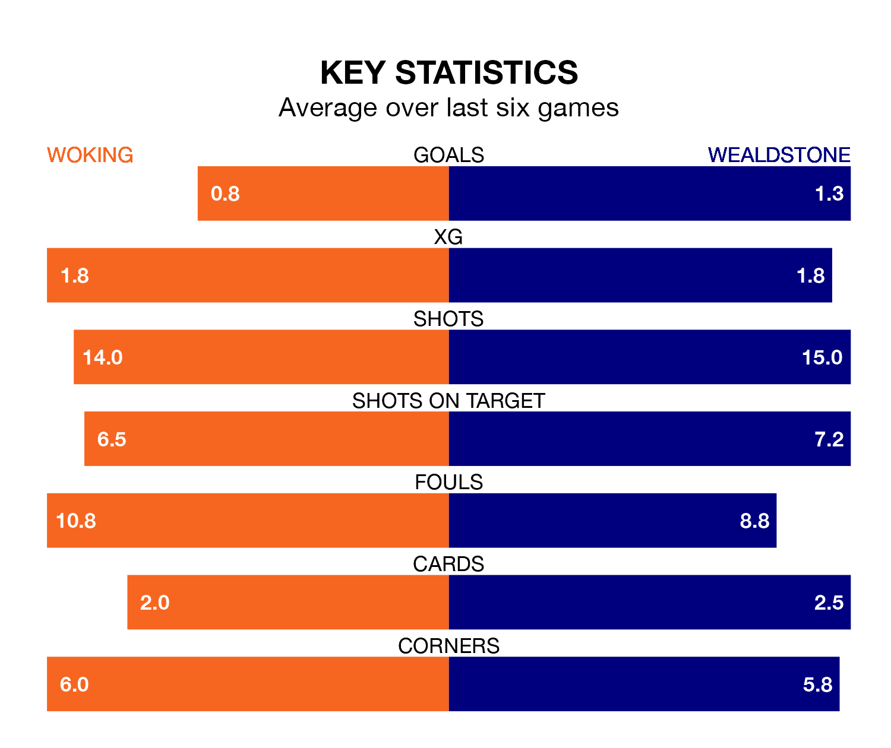

Woking host Wealdstone on Saturday at the Laithwaite Community Stadium in the National League.
In their last league match, on Tuesday, Woking lost to Ebbsfleet United 1-0 away.
Wealdstone also lost, 4-2 at home against Gateshead on February 17, with Jaydn Josiah Mundle-Smith and Tarryn Allarakhia on the scoresheet.
Woking are 22nd in the table after 34 games, of which they have won nine and drawn seven, earning 34 points.
Wealdstone are three places ahead of the Cardinals in 19th, with 10 wins and eight draws putting them on 38 points.
In the last 10 years, Woking and Wealdstone have played each other on 10 occasions. They won four each, and they drew twice.
On average, the Cardinals scored 1.2 goals and Wealdstone 1.3 in those matches.
Their last meeting was on September 26, when Wealdstone won 1-0 at home.
The hosts are in mixed form in the National League, with two wins and a draw from their last six games.
With a win and two draws over that period, the away side's form is slightly worse – they have taken five points from 18, compared to Woking's seven.
With 33 goals in 34 games so far this season, Woking are the league's second-lowest scorers with 1.0 goals per game. But they are conceding fewer than average too, letting in 43 goals at a rate of 1.3 per game.
Wealdstone are also below average scorers, with 1.4 goals per game, compared to a league average of 1.5. They have conceded 1.5 goals per game.
Updated: 10:08 (UTC), 23/02/24